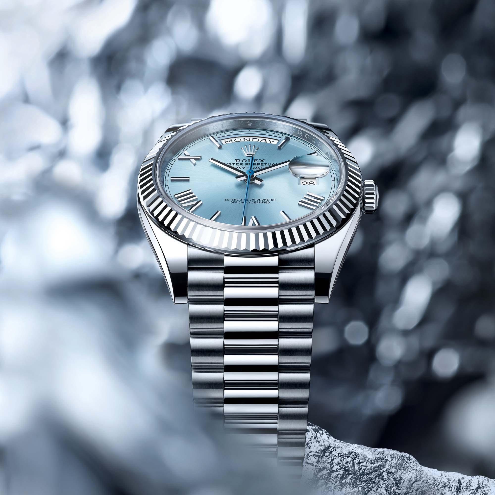

Rolex Day-Date 40mm Ref: 228206: Arcydzieło Luksusu i Precyzji
Wprowadzenie
Rolex to nie tylko marka, ale i legenda, symbol bezkompromisowej jakości, innowacji i stylu, która od ponad wieku kreuje światowe standardy w dziedzinie zegarmistrzostwa. To nazwa, która stała się synonimem luksusu, a także pionierem w technologii zegarmistrzowskiej, wprowadzając innowacje, które zrewolucjonizowały sposób, w jaki widzimy czas. Wśród kolekcji tego wyjątkowego producenta, jednym z modeli, który wyróżnia się nie tylko jakość wykonania, ale także wyjątkową elegancję i precyzję, jest Day-Date 40mm Ref: 228206. Jest to model, który kontynuuje długą i bogatą tradycję Rolex w tworzeniu zegarków nie tylko jako narzędzi pomiaru czasu, ale jako prawdziwych dzieł sztuki. W świecie, gdzie czas jest jednym z najcenniejszych zasobów, Rolex Day-Date staje się nie tylko symbolem statusu, ale także towarzyszem życia, świadkiem chwil, które kształtują naszą historię. Wyjątkowa dbałość o szczegóły, bezkonkurencyjna jakość materiałów i ręczne wykończenia czynią go jednym z najbardziej rozpoznawalnych i pożądanych zegarków na świecie. Day-Date 40mm Ref: 228206 to zegarek, który przekracza granice czasu, łącząc w sobie tradycję z nowoczesnością, elegancję z funkcjonalnością, i tworząc w ten sposób ponadczasowe arcydzieło hodinergii. Czy jesteś gotów odkryć, co kryje się za tą ikoną? Przyłącz się do nas w tej wyjątkowej podróży, która przeniesie cię w świat, gdzie luksus spotyka precyzję, a historia łączy się z przyszłością.

Historia i Dziedzictwo
Początki Legendy Day-Date od początku był symbolem prestiżu i wyjątkowości. Wprowadzony na rynek w 1956 roku, był to pierwszy zegarek, który wyświetlał zarówno datę, jak i pełny dzień tygodnia – rewolucyjna innowacja, która uczyniła go pionierem w świecie zegarków. Zegarek Prezydentów Znany także jako "Prezydencki Rolex", Day-Date szybko stał się wyborem światowych liderów, dyplomatów, i tych, którzy kształtowali historię. Nie jest tajemnicą, że wiele znanych postaci politycznych nosiło ten model, co dodatkowo podkreślało jego prestiż i wyjątkowy charakter. Rozwój i Innowacje Przez dekady, Day-Date był stale udoskonalany, a Rolex nieustannie wprowadzał innowacje, aby zapewnić, że model ten nadal będzie na czele technologicznego rozwoju. Model Ref: 228206 to apogeum tej ewolucji, łączące dziedzictwo tej tradycji z nowoczesnym podejściem do designu i technologii. Rzemiosło i Wyrafinowanie Day-Date to nie tylko innowacje technologiczne, ale także wyrafinowanie w rzemiośle zegarmistrzowskim. Każdy zegarek jest starannie wykończony przez doświadczonych rzemieślników Rolex, co gwarantuje, że każdy egzemplarz jest nie tylko precyzyjny, ale i piękny. Model Ref: 228206: Nowoczesność Spotyka Tradycję Model Ref: 228206 to wyjątkowe połączenie tradycji z nowoczesnością. Zachowuje on klasyczną elegancję, która uczyniła Day-Date sławnym, a jednocześnie wprowadza nowoczesne rozwiązania technologiczne i stylistyczne, które odzwierciedlają ducha współczesności.
Podsumowanie
Historia i dziedzictwo Day-Date to historia prestiżu, innowacji i doskonałości. To zegarek, który zawsze był na czele swoich czasów, nieustannie się rozwijając, ale nigdy nie tracąc swojej klasycznej elegancji. Model Ref: 228206 to hołd dla tej bogatej historii i zaproszenie do przyszłości, gdzie luksus i precyzja idą w parze z innowacyjnością i stylem.
Design
Cyferblat Lodowatnie niebieski cyferblat modelu 228206 nie tylko przykuwa wzrok, ale także podkreśla wyjątkową tożsamość tego zegarka. Kryształowe indeksy i wykończenia ręcznie wykonane przez mistrzów Rolex dodają mu głębokości i charakteru. Precyzyjne detale, takie jak złocone wskazówki i znaczniki godzin, tworzą harmonijną całość, która jest zarazem subtelna i wyrazista.
Wykonanie z Platyny
Co odróżnia model 228206, to fakt, że nie jest on wykonany z białego złota, ale z najszlachetniejszego z metali – platyny. Materiał ten nie tylko dodaje zegarkowi unikalnego blasku, ale także odporności na zarysowania i korozję. Jest to wybór, który podkreśla luksusowy charakter tego modelu.
Bransoleta Typu President
Solidna bransoleta typu President, również wykonana z platyny, zapewnia nie tylko wyjątkowy komfort noszenia, ale doskonale komponuje się z resztą zegarka. Jej delikatne i wyrafinowane ogniwka są doskonale wyważone, co zapewnia doskonałe dopasowanie do nadgarstka.
Wykończenie i Detale
Każdy element zegarka został starannie zaprojektowany i wykonany, od korony po kopertę. Wyjątkowa dbałość o szczegóły, takie jak polerowane i szczotkowane powierzchnie, podkreślają elegancję i wyrafinowanie tego modelu.
Podsumowanie
Design modelu Rolex Day-Date 40mm Ref: 228206 to połączenie wyjątkowego rzemiosła z eleganckim stylem. Wykonanie z platyny dodaje mu nie tylko luksusu, ale także ponadczasowego piękna, które czyni go doskonałym wyborem dla tych, którzy poszukują nie tylko zegarka, ale prawdziwego dzieła sztuki. To zegarek, który mówi nie tylko o czasie, ale także o tym, kim jesteś, i co reprezentujesz.
Mechanika
Kaliber 3255
Arcydzieło Inżynierii
Mechanizm kal. 3255, będący sercem modelu 228206, to prawdziwe arcydzieło inżynierii. Wyposażony w liczne patenty, mechanizm ten gwarantuje niezrównaną precyzję, wydajność i niezawodność. Jest to wynik lat badań i doskonalenia przez zespół inżynierów i rzemieślników Rolex.
Rezerwa Chodu
Rezerwa chodu do 70 godzin pozwala na noszenie zegarka przez cały weekend bez konieczności nakręcania. Jest to wygodna funkcja, która odzwierciedla zarówno praktyczność, jak i wyrafinowanie technologii Rolex.
Innowacyjne Komponenty
Kaliber 3255 zawiera również wiele innowacyjnych komponentów, takich jak nowy typ sprężyny balansu i wysoce wydajny system nawijania, który zwiększa wydajność i niezawodność zegarka. To mechanizm, który łączy w sobie tradycyjne zegarmistrzostwo z nowoczesną technologią.
Certyfikat Superlative Chronometer
Z certyfikatem Superlative Chronometer, model ten spełnia rygorystyczne standardy precyzji. To gwarancja, że zegarek będzie działał z błędem nie większym niż -2/+2 sekundy na dobę. Jest to osiągnięcie, które podkreśla dążenie Rolex do doskonałości w każdym calu.
Testowanie i Kalibracja
Każdy zegarek z mechanizmem kal. 3255 jest indywidualnie testowany i kalibrowany, aby zapewnić, że spełnia te wyjątkowe standardy. Proces ten obejmuje zarówno testy w laboratorium, jak i rzeczywiste warunki użytkowania, co gwarantuje, że zegarek będzie działał z precyzją w każdych okolicznościach.
Podsumowanie
Mechanika modelu Rolex Day-Date 40mm Ref: 228206 to połączenie wyjątkowego rzemiosła, innowacji i precyzji. To zegarek, który nie tylko mierzy czas, ale robi to z niezrównaną dokładnością i stylem. Jest to wyraz ducha Rolex - nieustannego dążenia do doskonałości i niekomplikowanej elegancji. Bez względu na to, czy jesteś kolekcjonerem zegarków, czy po prostu cenisz rzemiosło i technologię, mechanizm kal. 3255 jest świadectwem, że prawdziwa jakość zegarmistrzowska nie zna kompromisów.
Funkcje i Wygoda
Pokaz Dnia Tygodnia i Daty Model Day-Date, zgodnie z nazwą, oferuje dwie kluczowe funkcje, które wyróżniają go na tle innych luksusowych zegarków. Wyświetlanie pełnego dnia tygodnia i daty na cyferblacie jest nie tylko użyteczne, ale także eleganckie. Wykonane z precyzyjnością, te funkcje dodają zegarkowi wyjątkowego charakteru. Technologia Quickset Dzięki technologii Quickset, regulacja funkcji pokazywania dnia tygodnia oraz daty jest intuicyjna i wygodna. To rozwiązanie pozwala na szybkie i łatwe ustawienie tych parametrów bez konieczności przekręcania koronki przez wiele godzin. To innowacja, która podkreśla praktyczność modelu 228206. Wygoda noszenia Wygoda noszenia tego modelu nie ogranicza się tylko do jego funkcji. Ergonomiczny design, dopasowanie bransolety i odpowiednie wyważenie zegarka zapewniają komfort przez cały dzień. Zarówno bransoleta typu President, jak i obudowa zostały starannie zaprojektowane, aby zegarek idealnie dopasował się do nadgarstka. Wodoodporność Zegarek jest także wodoodporny, co oznacza, że można go nosić bez obaw podczas codziennych czynności, takich jak mycie rąk czy nawet pływanie. To dodatkowy atut, który czyni go praktycznym wyborem dla tych, którzy cenią zarówno styl, jak i funkcjonalność.
Podsumowanie
Funkcje i wygoda modelu Rolex Day-Date 40mm Ref: 228206 są świadectwem mistrzostwa marki w łączeniu elegancji z praktycznością. To zegarek, który nie tylko prezentuje się znakomicie, ale także jest wyjątkowo funkcjonalny i wygodny w codziennym użytkowaniu. Od intuicyjnych ustawień za pomocą technologii Quickset po wyrafinowane detale, które zapewniają komfort noszenia, wszystko świadczy o tym, że ten model został zaprojektowany z myślą o tych, którzy nie chcą wybierać między stylem a wygodą. Jest to zegarek, który zaspokoi nawet najbardziej wymagające gusta.